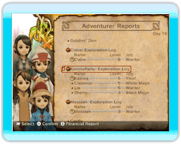
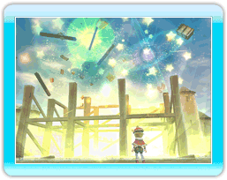

11 |
La journée d'un roi |
 |
Dans ce jeu, votre objectif est de construire des bâtiments et de réaliser les souhaits de votre peuple afin de rendre à votre royaume sa grandeur passée.
Libre à vous de décider sur quoi vous concentrer chaque jour.
Chaque journée s'écoule à la vitesse indiquée par l'horloge située en haut à gauche de l'écran. La journée se termine au coucher du soleil, lorsque Chime vient dire au roi qu'il est l'heure d'aller se coucher.  ● Le matin Chaque matin, Chime vous présente un rapport des événements de la veille. Consultez-le soigneusement : il vous fournira des indices sur les besoins du royaume et vous aidera à organiser votre journée. C'est aussi le moment de préparer les ordres de mission destinés aux aventuriers tels que l'exploration d'un donjon ou un changement de métier. |

● En journée
Une fois sorti du château, vous pouvez faire beaucoup de choses : par exemple sélectionner les aventuriers que vous souhaitez envoyer en mission, construire des bâtiments ou discuter avec les habitants de la ville. Lors de ces discussions, vous obtiendrez peut-être des indices sur les choses importantes à faire, soyez donc très à l'écoute de votre peuple. Il est également très amusant de regarder chaque citoyen vaquer à ses occupations quotidiennes. Elles reflètent leurs attentes et besoins immédiats. |
 ● Au coucher du soleil
● Au coucher du soleilUne fois la nuit tombée, Chime viendra vous chercher pour vous dire d'aller vous coucher, marquant ainsi la fin de votre journée. Si vous le souhaitez, vous pouvez aussi aller au lit plus tôt. À mesure que votre royaume prospérera et que le bonheur de vos citoyens et de leur famille augmentera, vous pourrez rester dehors plus tard. |
 |
 |
 |